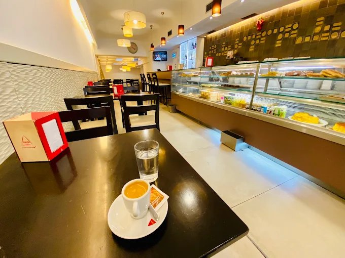
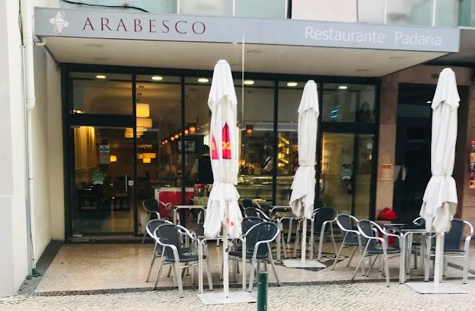

Padaria, pastelaria e almoços na Estrada de Benfica
Aberta todos os dias, das 7h às 20h
Horário
Todos os dias
07:00 às 20:00
Morada
Estrada de Benfica, 294-B
1500-098 Lisboa
Telefone
A montra
Pão, bolos e salgados de fabrico próprio, à vista no balcão.

- Pão
- Seleção de pão, de fabrico próprio.
- Bolos e tartes
- Bolos de creme e fruta, tartes e biscoitos com cobertura de chocolate.
- Salgados
- De fabrico próprio, à vista no balcão.
- Pequeno-almoço
- Café e pastelaria, todos os dias a partir das 7h.
- Almoço
- Pratos do dia, no local. Ver a ementa e os preços.

A casa
O Arabesco é uma padaria, pastelaria e restaurante de bairro, na Estrada de Benfica. A sala é ampla, com balcão de vidro, mesas de madeira escura e luz quente, e à porta há esplanada.
Serve-se pequeno-almoço, almoço com ementa de restaurante e café ao balcão, com pão, bolos e salgados de fabrico próprio.
Opiniões
4,2 em 621 avaliações no Google Maps
Pastelaria de ótima qualidade, funcionários super atenciosos, ótimo ambiente, bom espaço, otima seleção de pão, bolos e salgados. Recomendo
Tudo estava delicioso e foi servido rapidamente. Não aceitam cartões de crédito. Somente Multibanco e dinheiro.
Acolhedor e sempre movimentado, um bom sinal. Funcionários simpáticos, excelente seleção de doces. Para dois, gastamos €8,50 em um bom café da manhã (veja a foto). A única desvantagem: eles não têm terminal de pagamento; o pagamento é em dinheiro com recibo.

Como chegar
Estrada de Benfica, 294-B1500-098 Lisboa
- Segunda a domingo
- 07:00 às 20:00
Transportes e acesso
A cerca de 150 m da paragem Mercado S. Domingos de Benfica. Entrada acessível.
Ao mostrar o mapa, a Google recebe dados da sua visita. Saber mais.
- Telefone 217 783 344
- Email aarabesco81@gmail.com
- Morada Estrada de Benfica, 294-B, 1500-098 Lisboa
- Facebook Pastelaria Snack-bar Arabesco